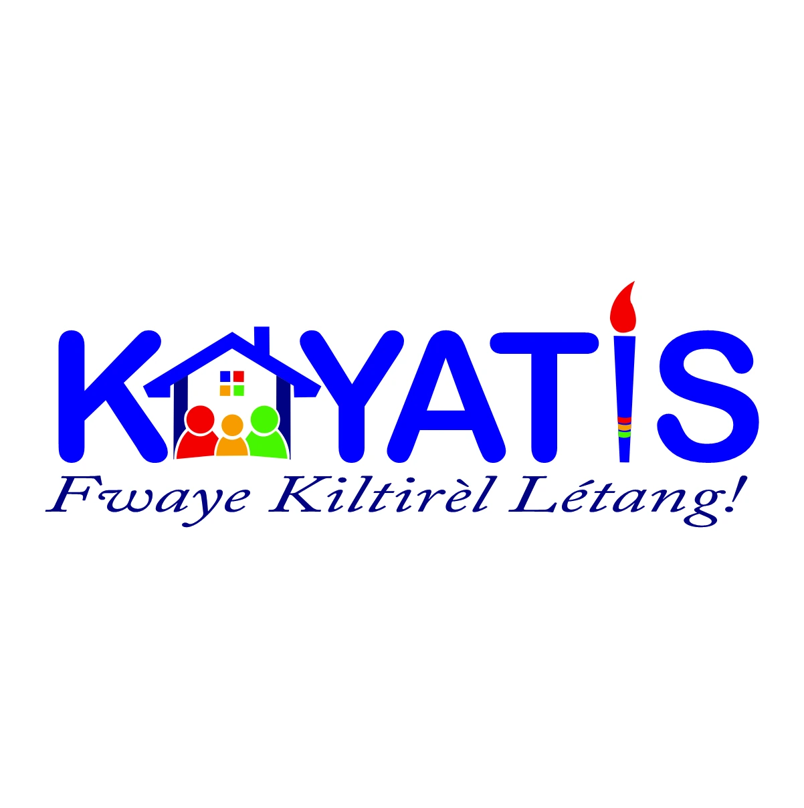
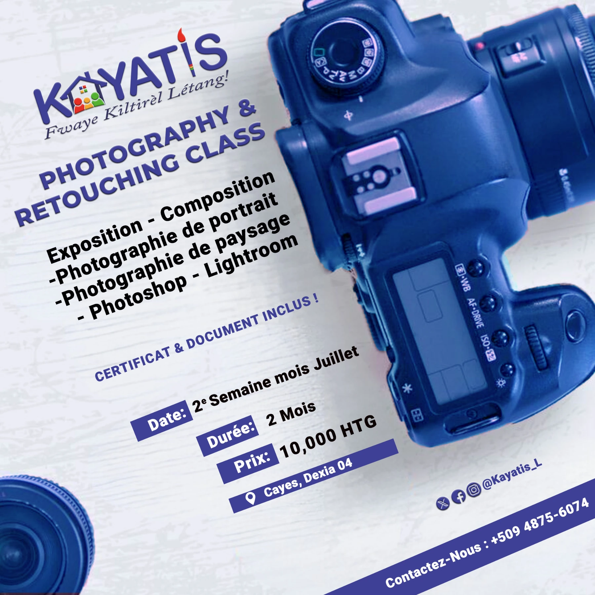
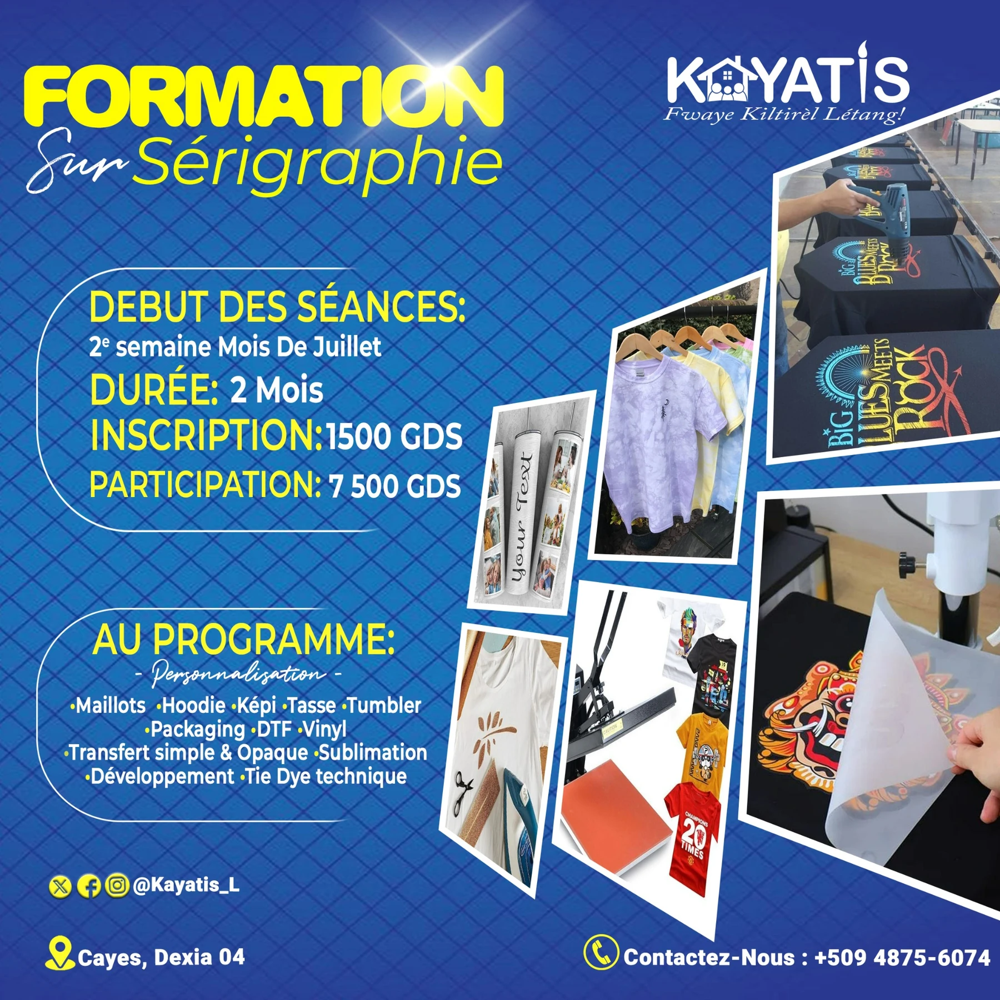

PROJET / IDENTITÉ VISUELLE & AFFICHES
KAYATIS.
La culture,
en couleurs.
Un logo et deux affiches de formation pour KAYATIS : photographie et retouche, puis sérigraphie. Une même signature, deux univers de création.
STRUCTUREKAYATIS
MON RÔLEConception graphique

01 / LE LANGAGE VISUEL
Un lieu.
Des personnes.
De la création.
Le logo associe une maison, des figures colorées et un pinceau à une signature typographique bleue. Les éléments figuratifs relient le nom à un lieu de rencontre et à l’expression artistique.
Le bleu structure l’identité. Le rouge, le jaune et le vert apportent des accents qui soulignent les personnages et les détails du symbole.
02 / LES APPLICATIONS
Deux formations.
Deux compositions.

Des appareils photo occupent le visuel et donnent son sujet à l’affiche. Les diagonales créent un mouvement entre le logo, le programme et les informations pratiques.

Le contraste du bleu et du jaune met en avant le titre et le programme. Les images de vêtements, d’objets et de matériel rendent les applications de la sérigraphie visibles.
Ces affiches sont présentées comme des réalisations graphiques du portfolio.